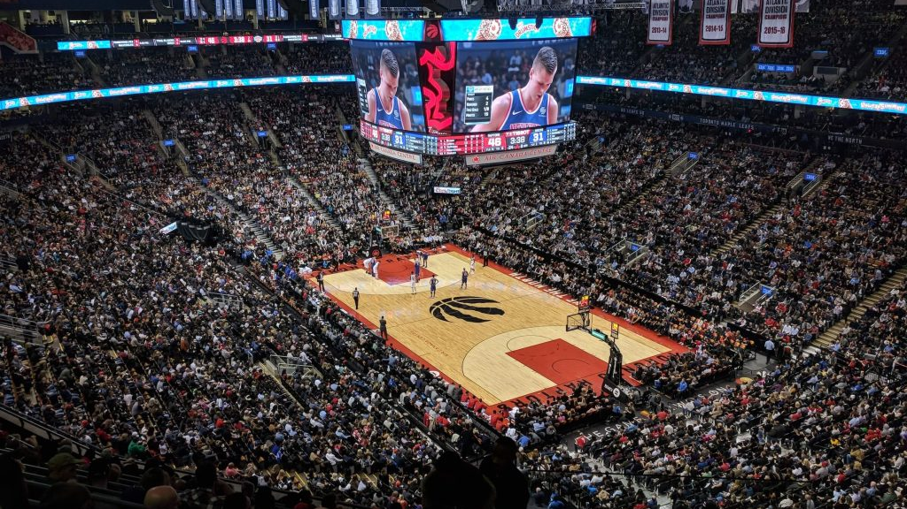

The Evolution of the NBA Shot
Exploring how shot selection, efficiency, and player roles have transformed the modern game.
A data visualization project by Anish Vallabhaneni, Harikesh Tambareni, Jonathan Le, and Turan Celik
NBA Introduction
The National Basketball Association has undergone a dramatic transformation over the past decade. From strategic shifts in coaching philosophy to revolutionary changes in player development, the game we watch today is fundamentally different from what it was just ten years ago.
This visualization explores one of the most significant changes in modern basketball: the evolution of shot selection and player positioning. We'll examine how teams have adapted their strategies and how players have refined their roles to maximize offensive efficiency.

Will figure out additional context
x
x
Where are the Hot Zones?
This interactive heatmap visualizes shot density across the court. Use the toggle to see how the geography of the game has shifted. In 2014, shots were more evenly spread. By 2024, a distinct "donut hole" appears in the mid-range, with shots clustering at the rim and behind the arc.
(Innovative Visualization)
[Vis 2: Interactive Court Heatmap] will be rendered here.
Efficiency vs. Volume
Does taking more shots make you a better player? This scatter plot charts player efficiency (Field Goal %) against their shot volume. We can see that being a high-volume "star" doesn't automatically mean you're an efficient scorer. This leads to our next question: what makes a player efficient?
(Linked Interaction Part 1)
[Vis 3: Scatter Plot with Brushing] will be rendered here.
Player Shot Profiles
This chart reveals the shot selection for individual players. It's linked to the scatter plot above.
To use the interaction: Click and drag on the scatter plot to select a group of players. Their shot profiles will appear here, revealing the *why* behind their efficiency.
(Linked Interaction Part 2)
[Vis 4: Linked Stacked Bar Chart] updates based on brushing Vis 3.
What's My Role?
Efficiency isn't just about individual skill; it's about playing your role. This matrix shows the shot diet for each position. It's clear that Guards, Forwards, and Centers have fundamentally different jobs on the court, specializing in different zones to maximize offensive output for the team.
Key Insights from the Position Matrix
Insights will be displayed here:
- Analysis of shot distribution changes between 2014 and 2024
- Position-specific trends and patterns
- Key takeaways for each player position
- Statistical significance of changes
Closing Thoughts
The data reveals a clear story: basketball has fundamentally changed. The mid-range shot, once a staple of NBA offense, has been largely abandoned in favor of more efficient alternatives. Teams now prioritize shots at the rim and beyond the arc, creating a "donut hole" in the mid-range area.
This transformation reflects deeper changes in basketball philosophy - from valuing individual shot-making to emphasizing team efficiency, from traditional positional roles to positionless basketball, and from gut-feeling coaching to data-driven decision making.
As we look to the future, one thing is certain: the NBA will continue to evolve. The question isn't whether change will come, but what the next revolution will look like.
[Closing Thoughts Visualization] will be rendered here.